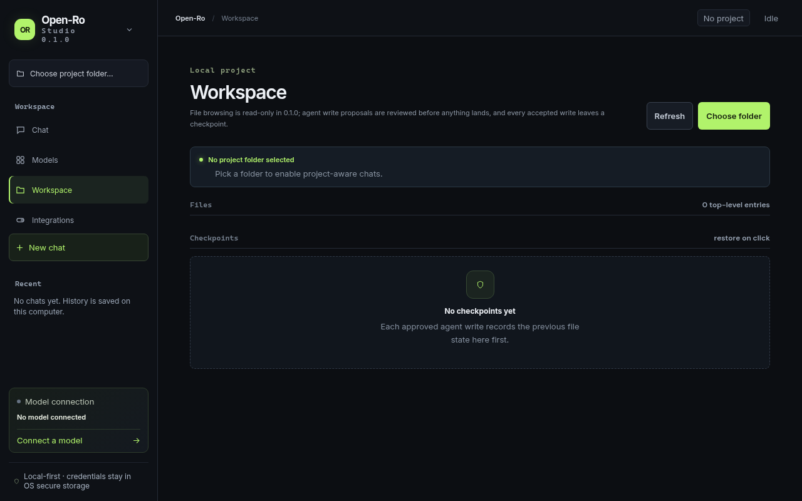
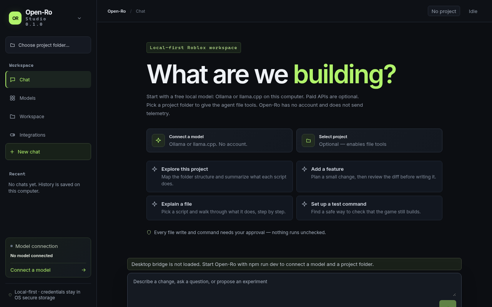
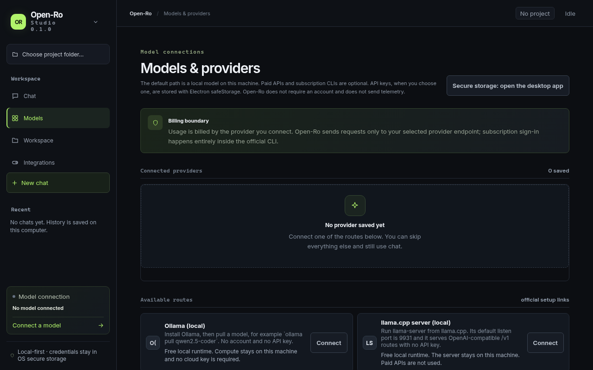

Open-Ro Studio — an open-source project, designed and built by Cayleb Alvarez-James. Checked against the public repository, 16 November 2026.
Your workspace. Your model. Your pen.
An open-source, local-first desktop studio where an AI agent helps build the experience — and proposes every change for review before anything lands in your project.
Status — version 0.1.0, a verified foundation; early development, in the repository’s own wordsLicence — MIT — the repository is publicEvidence — the repository, cited throughout
The product, in pictures
Scroll — the product explains itself

on your machine." loading="lazy" decoding="async">

plain language." loading="lazy" decoding="async">

first." loading="lazy" decoding="async">
Screen i. The workspace — the project’s own screenshot.
on your machine." loading="lazy" decoding="async">
Screen i. — the workspace
Your project, on your machine.
A Rojo-style workspace — files, scripts and checkpoints — that never has to leave your computer.
Look forthe checkpoints panel: restore points keep every step reversible.
plain language." loading="lazy" decoding="async">
Screen ii. — the agent
Ask in plain language.
The agent works from your actual workspace — files, scripts and project state — not from pasted snippets.
Look forthe first-run notice the app itself shows: the Studio bridge is not connected yet. Kept in, because that is what the app really shows.
first." loading="lazy" decoding="async">
Screen iii. — the models
Local models first.
Ollama and llama.cpp are first-class routes that work fully offline. API routes are optional, use your own keys, and store them locally.
Look forthe route list — local runtimes first; keys stay on your machine and are redacted from logs.
649
automated tests across 61 files, documented in the repository
0.1.0
the verified foundation — milestones 1–5 complete
10k tris
the MeshPart decimation budget in the Blender asset pipeline
“Permissions before action. Proposals before landing.”
The two rules that shape the whole tool
The workspace. Project files, the selected script, and the checkpoints panel — with the note the app itself shows: agent write proposals are reviewed before anything lands.Source: open-ro repository, docs/assets/workspace.png
First, the problem
AI help that starts by taking your project away
AI coding help for Roblox usually means pasting your project into someone else’s cloud: an account, a subscription, your code and keys on their servers, and an agent that edits first and explains later.
Open-Ro is built the other way: the studio runs on your machine, your files never have to leave it, local models are the default route, and the agent’s writes are proposals you review — not edits you discover.
Second, the product
The agent does the loop work. The person keeps the pen.
i.
Agent chat with project context
Ask for changes in plain language; the agent works from your actual workspace — files, scripts and project state — not from pasted snippets.
ii.
Local models first
Ollama and llama.cpp are first-class routes that work fully offline. API and CLI routes are optional and use your own keys, stored locally and redacted from logs and the interface.
iii.
A control plane for Roblox Studio
Inspect and safely mutate a live Studio session — playtest lifecycle, DataModel inspection, property writes, script edits and screenshots — with permissions asked before action and checkpoints before mutation.
iv.
A 3D asset pipeline
Generate or import a model, watch it, and send it through Blender: MeshPart decimation to a 10,000-triangle budget, collision proxies and orientation fixes, then into Studio.
v.
Parallel sessions that stay light
A pool of agent bridges with least-recently-used hibernation, so several workspaces stay open without each one holding a live process.
vi.
No account, no telemetry
Local-first by design: projects, settings, keys and history stay on your machine.
Third, the shape of it
A desktop studio with two rules
Open-Ro is a desktop application (Electron and React, in TypeScript) for Windows and native Linux. It opens a Rojo-style project workspace, connects to Roblox Studio through a local bridge when you ask it to, and routes model calls through whichever provider you configure — local runtimes first.
Two rules shape everything: permissions before action, and proposals before landing. The agent can inspect freely within the bounds you set; anything that changes the project arrives as a reviewable proposal, and Studio mutations take a checkpoint first, so a bad step is a restore, not a loss.
Fourth, the record
Open-Ro Studio, in figures
The measured record, as documented in the repository — checked 16 November 2026.
Measure
Figure
Basis
Version
0.1.0
“Verified foundation” — milestones 1–5 complete: workspace, providers, agent runtime, Studio control plane, Blender pipeline, packaging
Automated tests
649
Across 61 files, documented in the repository
Stack
Electron + React
In TypeScript — the cited commit’s own package record
Licence
MIT
The repository is public
Platforms
Windows · native Linux
Roblox Studio on Linux is best-effort through Wine/Vinegar
Asset pipeline
≤ 10k tris
Blender MeshPart decimation budget, with collision proxies and orientation fixes
Repository read at
10f2d60
cayleb-james2008/open-ro · 10 November 2026
Test counts and milestone status are the repository’s documented figures, read on 16 November 2026.
Finally, the honest part
Where it stands
Version 0.1.0 is a verified foundation, in the repository’s own words: milestones 1–5 are complete — the workspace, providers, agent runtime, Studio control plane, Blender pipeline and packaging — with 649 automated tests across 61 files, documented in the repository. The repository is public under the MIT licence and labelled, honestly, as early development.
The screenshots on this page are the project’s own, from its documentation. The chat capture shows the app’s first-run state, including its own notice that the Studio bridge is not connected yet — kept in, because that is what the app really shows.
Take the studio. It’s open.
Open-Ro Studio is public under the MIT licence — the workspace, the providers, the agent runtime and the pipeline, early development and all.